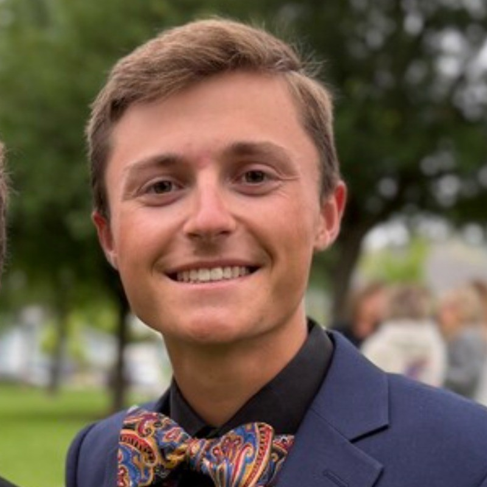
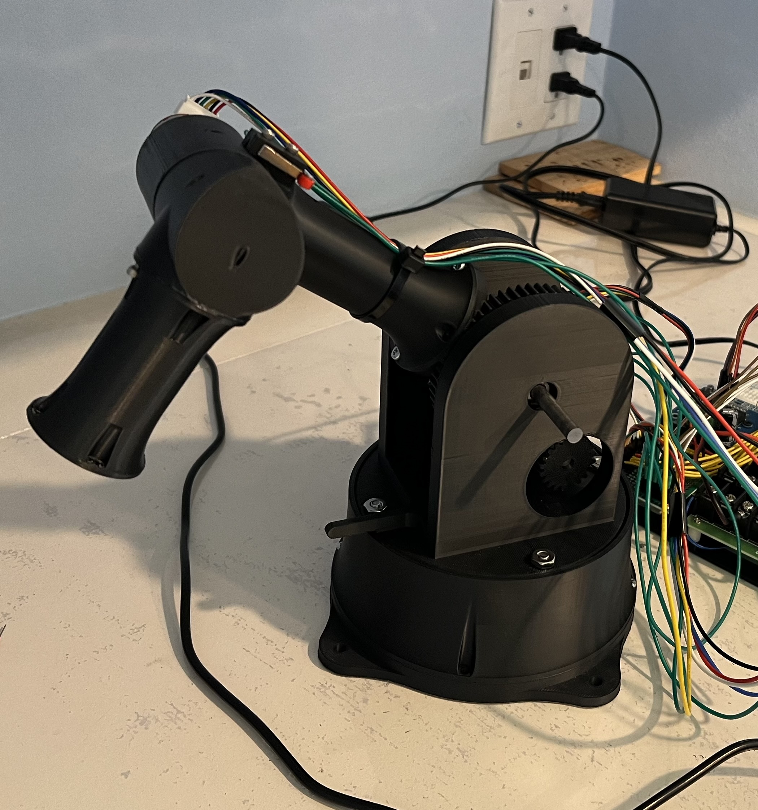
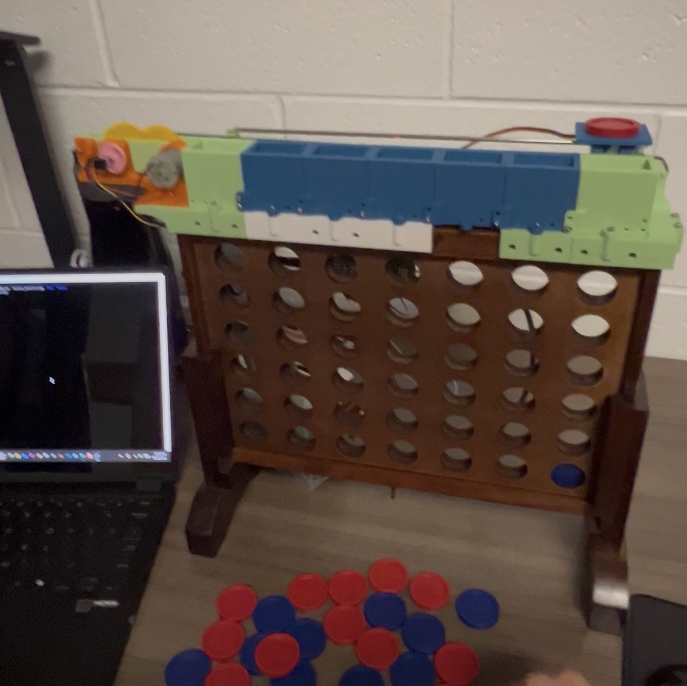
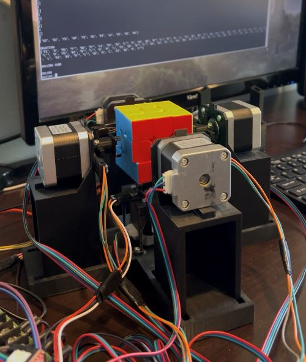
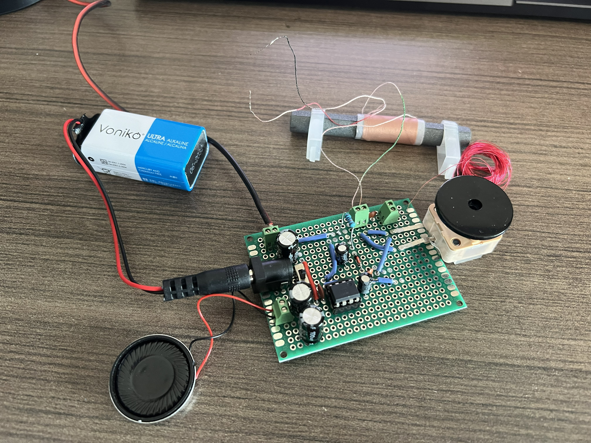
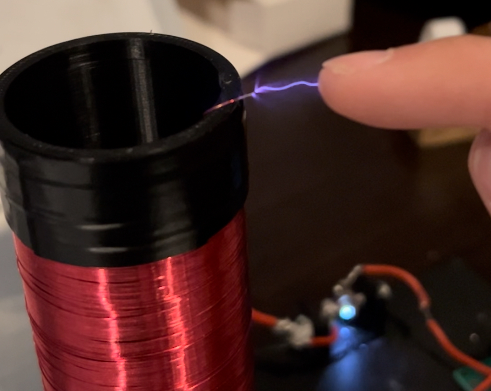
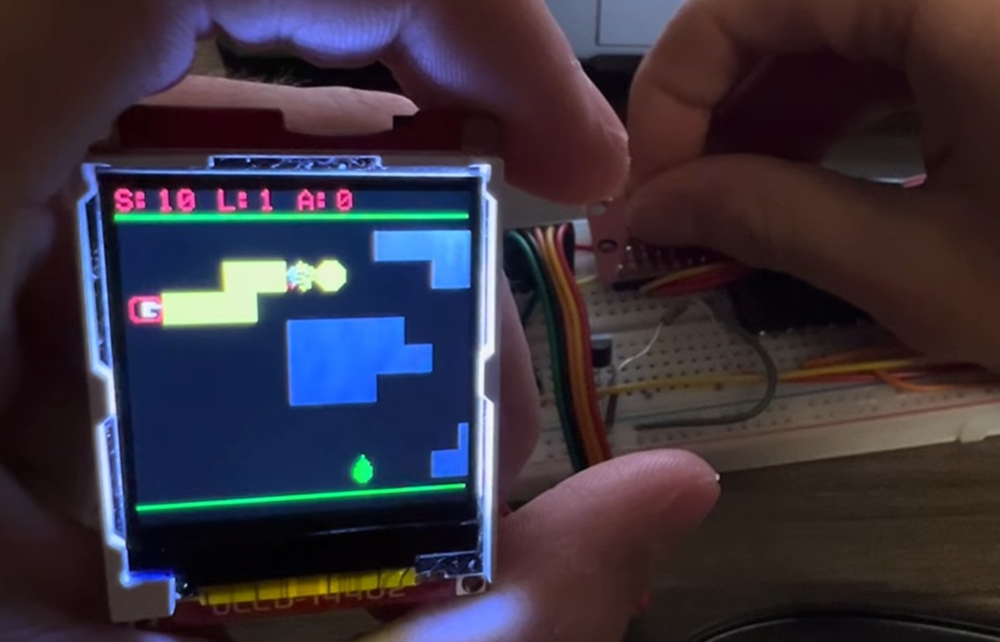

I’m an Electrical Engineering student at Georgia Tech with experience and interests spanning robotics, embedded systems, signal processing, and circuit design. I enjoy developing hardware-software systems that combine sensing, control, and computation to solve real-world engineering problems. I’m currently seeking a Summer 2026 internship in embedded, hardware, or systems-focused engineering roles.
Software: C, C++, Python, MATLAB, RISC Assembly, Java, Linux, ROS2, UART, Git
Hardware: STM32, Arduino, Jetson Nano, Raspberry Pi, ESP32, Motors, Sensors, Soldering, Multimeter, Oscilloscope
Tools: CAD, KiCAD, VS Code, Github

STM32-based robotic arm project focused on embedded control systems and robotic system design. Current progress includes 3-DOF electromechanical design, embedded STM32 closed-loop PID control firmware, custom Jetson Nano-STM32 communication protocol, and ROS2-based robot interface & teleoperation.
View Documentation in GitHubClick the image for full demo video

Autonomous robot designed to play Connect 4 against a human opponent using piece sensing, minimax game AI, and electromechanical actation.
View Documentation in GitHubClick the image for full demo video

Autonomous Rubik's Cube solving robot which uses camera-based color recognition, heuristic DFS solving algorithm, and stepper motor actuation.
View Documentation in GitHubClick the image for full demo video

AM Radio Receiver designed with tunable LC resonant circuit, envelope detection, and analog audio amplification. GT ECE 1100 Discovery Project.
View Documentation in GitHubClick the image for full demo video

Mini spark-gap Tesla coil which uses a flyback transformer circuit and custom capacitor bank to generate 1-1.5 cm plasma arcs. The unit runs at about 9W using 2 lithium ion batteries.
Click the image for full demo video

Real-time side-scroller video game on ESP32 in C with custom hash tables, dynamic memory management, and procedural map generation. GT ECE 2035 Final Project
Click the image for full demo video